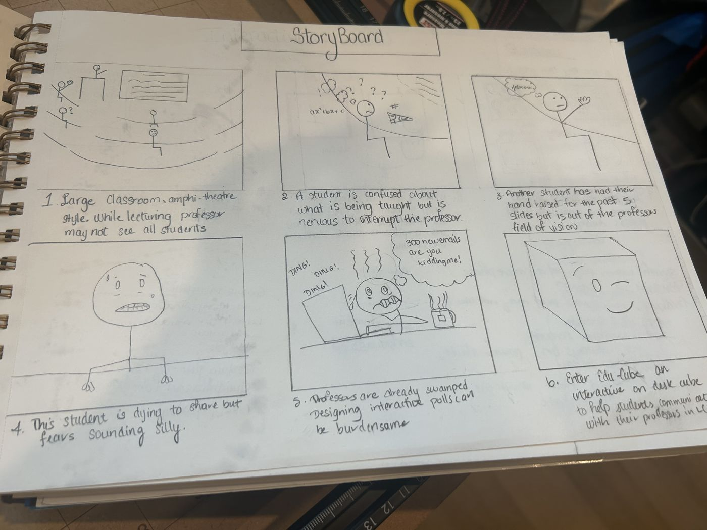
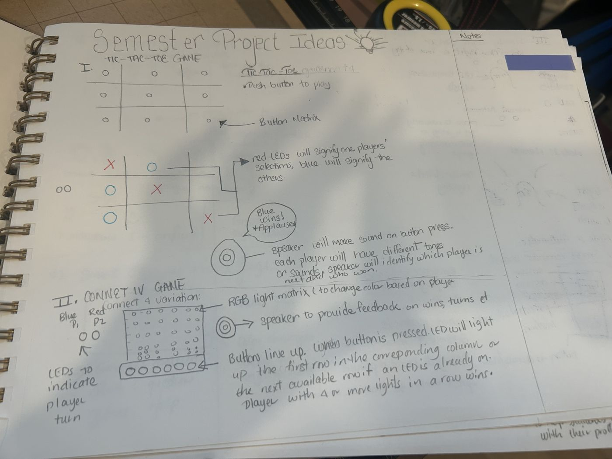
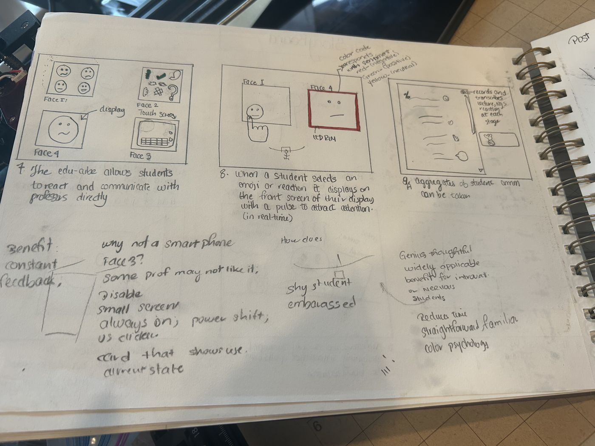
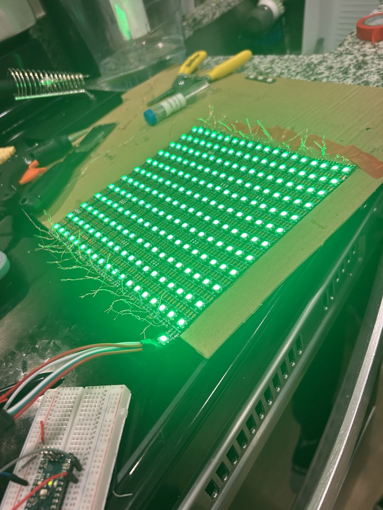
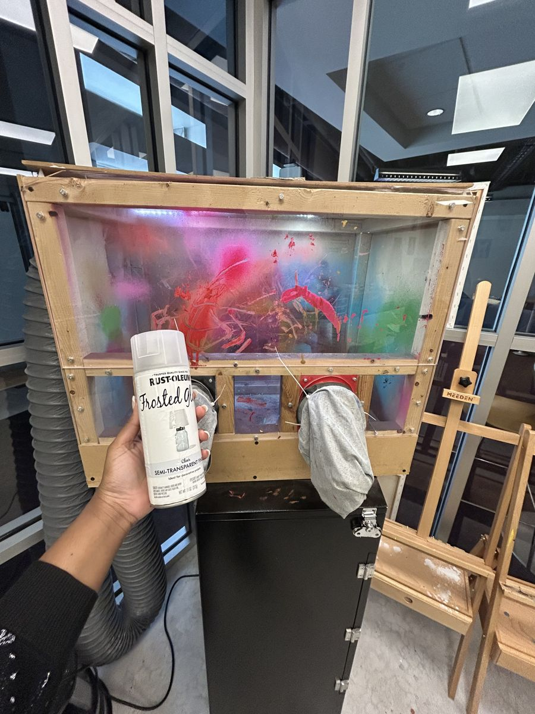

The challenge
In large lectures, confused students stay quiet, and professors can't see who needs help.
What I did
Reviewed classroom feedback research, storyboarded the experience, designed EduCube and prototyped capacitive touch input and an LED display on Arduino.
The outcome
A working touch-to-light prototype and a concept peers called widely applicable, especially for introverted students.
The journal
TangibleTechLogs started as a class requirement and became my working notebook: sketches, experiments, mistakes, successes and reflections from learning physical computing.
An early warm-up set the tone. I set out to make a pop-up business card that reflected my love for computing, realized how complex pop-up mechanisms were, and by the sixth iteration chose laser-cut graphics instead. That's the design funnel in miniature: start broad, learn the constraints, then commit to what you can build well.
The problem
I storyboarded what goes wrong in a large, amphitheater-style lecture:
- Out of sight
- A student has had her hand up for five slides, outside the professor's field of vision.
- Afraid to interrupt
- Another is confused but nervous to stop the lecture.
- Afraid to sound silly
- A third is dying to share but worries about how it will sound.
- No time to build polls
- Professors are already swamped. Designing interactive polls for every class is a burden.

How might students signal what they need in the moment, discreetly, without adding work for the professor?
What the research said
- Clickers fall short
- Clickers give fast, anonymous answers to multiple-choice questions but little room for richer feedback. ClassQue (Robbins, 2011) added open-ended responses and peer feedback.
- Glanceable light
- An LED-matrix edge display (Pohl et al., 2016) shows notifications without demanding direct interaction, so people choose how much to engage.
- Touch on a cube
- Tangible Touch used capacitive sensing on a cube to recognize taps and swipes, and found double-taps most reliable.
- Low-tech has value
- Old-Skool Tech (Ross et al., 2024) argues for physical, human-centered designs as a counterweight to automation.
- Tangible input
- Coder Cards (Lin et al., 2023) show how physical objects can carry instructions that a device reads, mirroring block-based programming.
Exploring directions
I sketched several semester project ideas, including a light-up tic-tac-toe board and a Connect Four game on an RGB light matrix, and pitched two directions: a smart paper checklist that turns handwritten tasks into digital ones with a swipe, and EduCube. EduCube had the clearest user, problem and moment of use.

The concept: EduCube
An interactive on-desk cube. Each face does one job:
When a student taps a reaction, the display lights up with a pulse to catch the professor's eye, color-coded by sentiment: positive, neutral and negative. The professor sees an aggregate of reactions and comments for each lecture.

Why a cube, not a phone
- Always on
- Feedback is constant, not limited to moments when a poll is open.
- Discreet
- Shy or nervous students can speak up without being singled out.
- No distraction
- No small screen pulling attention away from the lecture.
- Familiar
- Straightforward to use, and color does most of the communicating.
- Less work
- It saves professors from building polls for every class.
Critique feedback called it thoughtful and widely applicable, with particular benefit for introverted students. It also raised a fair question: some professors may not want constant feedback, so the display should be easy to turn off.
Building it
For the final build, I prototyped the two pieces the concept depends on: touch input and a light display that's readable across a room.


Three capacitive sensors, each wired through a 10 MΩ resistor, toggle their own LED. A debounce window keeps one touch from registering twice:
// Touch toggles the LED once per press if (yes1 && !previous1 && millis() - time > debounce) { state1 = (state1 == LOW) ? HIGH : LOW; time = millis(); } digitalWrite(led1, state1); previous1 = yes1;
What I took away
- Simplicity is a design decision. Choosing what not to build, like the pop-up card, is what made the rest buildable.
- A storyboard does a lot of work. Drawing the lecture hall made the problem and the moment of use obvious before any code.
- Physical form changes behavior. A cube on the desk invites feedback in a way a phone app competing for attention doesn't.
Tools and resources
- Arduino
- CapacitiveSensor library
- Adafruit NeoPixel
- TinkerCad
- Breadboarding
- Laser cutting
- Sketching and storyboarding
Want to see more of the journal?
Every sketch, experiment and line of code is logged on GitHub. I'm also happy to walk through the build.